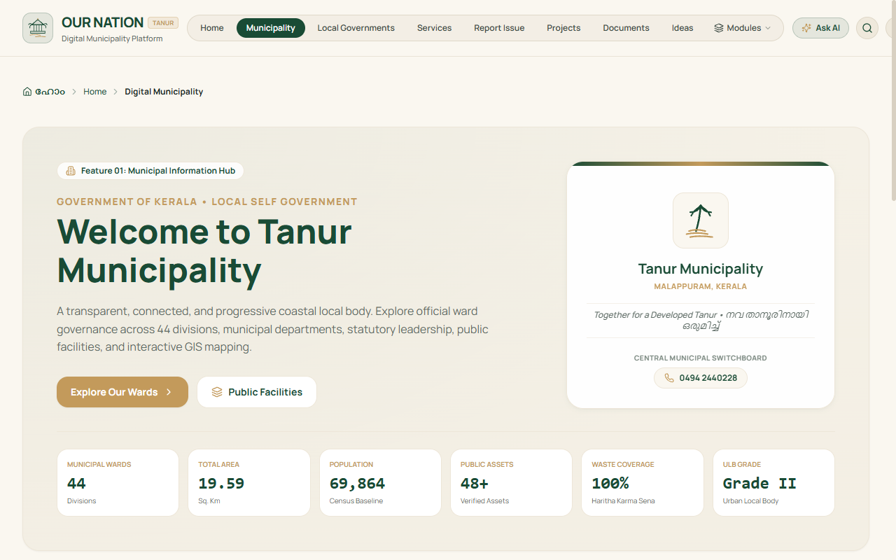
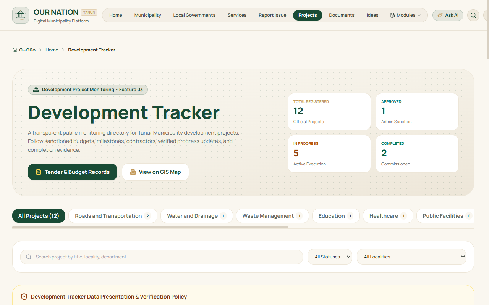
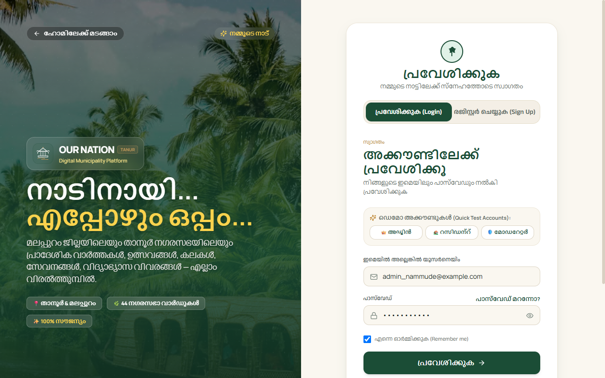
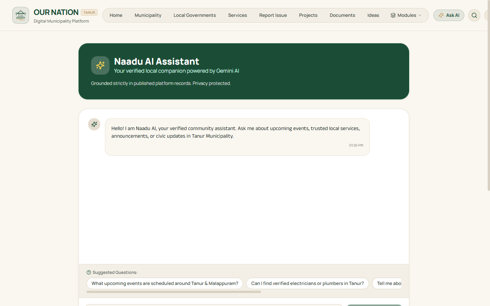

OUR NATION Reimagining Local Governance Through Citizen-Centric Civic Tech
A citizen-centric digital platform designed to bridge everyday people with local government services, transparent municipal records, public representatives, and community development initiatives — starting with Tanur, Kerala.

Why OUR NATION Was Created
Bridging the critical digital divide between municipal administration and everyday citizens.
The Vision: Democratized Civic Participation
OUR NATION is a civic-technology web application conceptualized and built by CRAFTIQ to transform how citizens interact with their local self-government institutions.
Starting with the historic coastal municipality of Tanur (Malappuram District, Kerala), the project establishes a modern digital standard for urban and rural local bodies across Kerala. It consolidates scattered public services, statutory guidelines, ward-level leadership contacts, civic issue lodgement, and development monitoring into an intuitive, accessible web platform.
- Zero misinformation: 100% grounded in verified government records
- Mobile-first accessible design for diverse age and literacy demographics
- Native bilingual capability in Malayalam and English
- Public transparency without political bias or fake metrics
The Real Community Challenge in Tanur
In everyday municipal life across Kerala, citizens face recurring administrative friction that discourages active community participation:
Official circulars, vital record procedures, and welfare schemes were scattered across bulletin boards, physical registers, or poorly maintained websites.
When streetlights broke or drainages overflowed, residents lacked a public tracking system to verify if their complaint was triaged or resolved.
Many residents struggled to distinguish whether their locality fell under Tanur Municipality (Urban) or Tanur Block Panchayat (Rural Grama Panchayats).
10 Core Implemented Features
Every feature verified directly against the production codebase and live deployment.
Digital Municipality Hub
Comprehensive institutional directory for Tanur Municipality (Grade II Urban Local Body, 19.59 sq. km). Displays statutory administrative data, key municipal statistics, official switchboard contacts (0494 2440228), departments, and civic assets.
Civic Connect (Issue Redressal)
Citizen grievance reporting engine spanning 6 civic categories (Roads & Footpaths, Waste Management, Drainage, Streetlights, Trees & Environment, and General). Features a transparent 6-stage lifecycle from Submitted to Resolved with public tracking IDs.
Local Government & Delimitation Directory
Constitutional governance guide based on the 73rd and 74th Amendments. Clarifies the structural separation between Category A (Urban: Tanur Municipality) and Category B (Rural: Tanur Block Panchayat's constituent Grama Panchayats: Cheriyamundam, Niramaruthur, Ozhur, Ponmundam, Tanalur, Perumanna-Klari).
Leadership & Ward Representatives
Public profiles of statutory municipal heads (Chairperson Nasla Basheer, Vice Chairman Ashraf M.P., Secretary Hazeena K.P.) alongside a complete ward councillor directory across all 44 municipal wards with verified phone numbers, ward names, and official affiliations.
Public Development Tracker
Transparent capital projects directory monitoring infrastructure investments (roads, drainage networks, healthcare upgrades, coastal facilities). Tracks sanctioned budgets, executing departments, contractors, milestones, and photographic completion evidence.
Essential Municipal Public Services
Clear digital gateways and document checklists for essential municipal citizen services: Property Tax payments (Sanchitha), Building Permits & D&O renewals (K-SMART), Vital Records (Birth, Death, Marriage via Sevana CR), and Social Security Welfare Pensions.
Documents, Gazettes & Citizen Charter
Centralized repository for council minutes, municipal resolutions, annual budgetary allocations, tender notifications, and service charters. Enables direct PDF inspection and download for citizens and RTI applicants.
People's Voice (Community Proposals)
A participatory democracy space where residents propose neighborhood ideas, discuss developmental priorities, coordinate community volunteering, and offer constructive feedback to elected council members.
Citizen Authentication & Personal Dashboard
Secure authentication with granular Role-Based Access Control (Resident, Community Moderator, and Municipal Administrator). Personalized resident dashboard tracking personal grievances, ward bookmarks, and notification alerts.
Naadu AI (നാട് AI) Service Assistant
An intelligent conversational assistant powered by Google Gemini, grounded strictly on verified municipal database records. Bilingual Malayalam & English natural language understanding, answering questions on timings, certificates, and procedures with zero hallucination.
Authentic Interface Showcase
Captured directly from the live production deployment of OUR NATION.
Welcome to Tanur Municipality Portal
Hero statistics, statutory grade classification, and verified LSGD parameters.

Civic Connect Grievance Queue & Triage
Multi-category complaint submission with live tracking, SLA response windows, and status indicators.

Development Project Monitoring & Tenders
12 official registered development projects with sanctioned budgets, execution stages, and contractor tracking.

Local Government Directory
Urban vs Rural statutory governance breakdown.

Digital Services & Helpdesk
K-SMART, Sanchitha, and Sevana CR integrations.

Citizen Authentication
Malayalam-first sign-in with resident and admin demo accounts.

Naadu AI Civic Companion
Strictly grounded in published municipal database records.

Production Technology Stack
Verified directly from the project's dependencies and repository architecture.
Next.js 14 & React 18
App Router, React Server Components for rapid initial load, and progressive client hydration.
TypeScript & Zod
Strict schema enforcement for grievance inputs, tender records, and municipal boundaries.
Supabase PostgreSQL
Row Level Security (RLS) policies protecting resident privacy with audit trail logs.
Google Gemini API
Gemini 1.5 Flash grounded in database records with zero external hallucinations.
Leaflet & OpenStreetMap
SSR-safe dynamic loader for interactive ward boundaries, municipal assets, and development sites.
Tailwind CSS
Bespoke civic palette: Forest Green, Warm Cream, and Earth Gold with responsive utilities.
Bilingual i18n
Comprehensive English & Malayalam dictionaries with one-click toggles and local persistence.
Vercel Global Edge
Sub-second global CDN response times, automated CI/CD builds, and high-availability caching.
The CRAFTIQ Engineering Lifecycle
How we designed, validated, and deployed OUR NATION for real citizens.
Civic Field Research
Studied the administrative reality of Kerala's Local Self Government Department (LSGD), analyzed Tanur Municipality's 44-ward governance records, and identified the friction points citizens face when requesting services.
Architecture & Data Modeling
Architected the relational schema in Supabase PostgreSQL: modeled ward delimitation, structured 6-stage grievance status lifecycles, and designed strict Row Level Security to protect citizen privacy.
Heritage Civic Design
Crafted a grounded visual language rooted in coastal Kerala identity: Forest Green (#064E3B), Warm Cream (#FDFBF7), and Earth Gold (#D97706) with Malayalam typography.
Feature Engineering
Implemented Civic Connect grievance reporting, the 12-project Development Tracker with expenditure budgets, essential service checklists (K-SMART, Sanchitha), and the complete 44-ward councillor directory.
Grounded AI Integration
Built the Naadu AI conversational pipeline using Google Gemini 1.5 Flash. Implemented strict database retrieval boundaries to ensure the AI only answers using published municipal data and refuses hallucination.
Testing & Edge Deployment
Executed an automated 11-step verification suite validating role permissions, offline fallbacks, mobile touch ergonomics, and deployed to Vercel's global edge network at our-nation.vercel.app.
Experience OUR NATION Live
Explore the active civic platform, test the bilingual navigation, query Naadu AI, or review the 44-ward councillor directory.